Shot 60 Analysis#
Decaying shock in fused silica near the temperature inversion on the principal Hugoniot.
Driver and Flyer are SS304.
Erik Davies
Sarah T. Stewart
July 26, 2024
Updated May 13, 2025
%%capture
## This cell loads the modules, data, and EOS parameters
## capture magic function hides the output; comment out to see diagnostic info during data load
## Run executable notebook for output
# Z Hugoniot fit
#qtz_liq_hug = 'KD09' # or `KD13` # pick which quartz Hugoniot equation
#qtz_liq_hug = 'NEW' # or `KD13` # pick which quartz Hugoniot equation
%run -i scripts/set_paths
%run -i scripts/load_modules
%run -i scripts/load_silica_data
%run -i scripts/define_mc
%run -i scripts/define_eos
%run -i scripts/set_plotstyle.py # customize matplotlib
%run -i scripts/set_colors.py # custom colors
#%run -i scripts/load_vapor_domes.py
#%run -i scripts/load_liquid_model.py
#%run -i scripts/load_solid_models.py
#%run -i scripts/hugoniot-calcs.py
---------------------------------------------------------------------------
FileNotFoundError Traceback (most recent call last)
File ~/work/silica-supplement/silica-supplement/silica-book/scripts/define_eos.py:265
263 fs_fitTus_stv0.outputfitpath = modelfitpath # in load_paths.py
264 fs_fitTus_stv0.filename = 'fs_fitTus_stv_quadratic'
--> 265 fs_fitTus_stv0.loadjson()
266 fs_hug_stv.T = fs_fitTus_stv0.calcf(fs_hug_stv.us) # calculate temperatures on the solid branch Hugoniot
268 # ------- Fused Silica Transitions -----------
269 #
270 # FS Pressure bounds on the Omega data wiggles
File ~/work/silica-supplement/silica-supplement/silica-book/scripts/hpeos_module.py:351, in HPeos_Fit.loadjson(self)
348 def loadjson(self):
349 # read in json formatted fit record file and then reconstruct a dictionary
350 # need to add a function to load the readable version
--> 351 with open(self.outputfitpath+self.filename+'.txt', 'r') as f:
352 filetext = f.readlines()[0] # read in whole file into text
353 datadict = json.loads(filetext) # convert long string into dictionary
FileNotFoundError: [Errno 2] No such file or directory: './model-fits/fs_fitTus_stv_quadratic.txt'
Target Configuration#

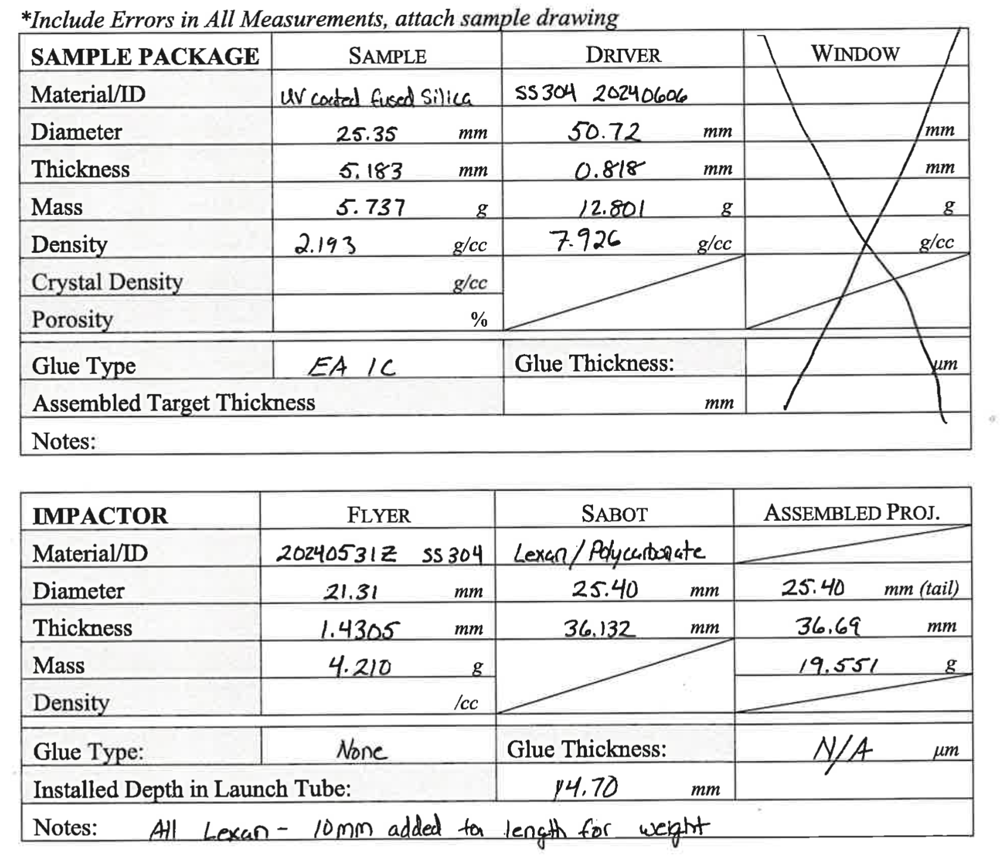
MAVIS Impact Velocity system#
MAVIS inter-coil distance = 50.00 mm
Time of Flight = 8.141023954999998 +/- 0.005656854249486605 us
Velocity = 6.141733555432095 +/- 0.004924228116409747 km/s
Anaysis file: MAVIS_Velocity_Analysis_v2.py

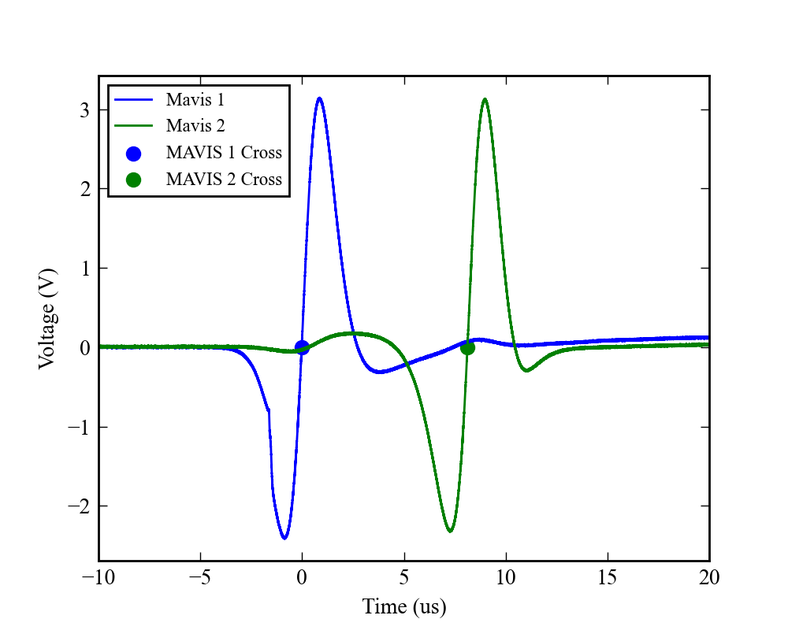
Initial Impedance Match#
Using github-impactswiki: impedance-match-app-mc/impedance_match_app.ipynb
Steel304-l2 is SS304 refit by sts. Fused-qtz-low is fit Us=2-10 km/s.
Impact velocity 6.14 (km/s). Hugoniot for reshock and release.
Steel304-l2 → Steel304-l2
Steel304-l2 P = 221.27 (GPa), up = 3.07 (km/s), US = 0.0 (km/s), E = 4.72 (MJ/kg), ρ = 11.84 (g/cm3)
Steel304-l2 P = 221.27 (GPa), up = 3.07 (km/s), US = 9.16 (km/s), E = 4.72 (MJ/kg), ρ = 11.84 (g/cm3)
Steel304-l2 → Fused-qtz-low Steel304-l2 P = 85.3 (GPa), up = 4.57 (km/s), US = 0.0 (km/s), E = 1.23 (MJ/kg), ρ = 10.18 (g/cm3)
Fused-qtz-low P = 85.3 (GPa), up = 4.57 (km/s), US = 8.46 (km/s), E = 10.46 (MJ/kg), ρ = 4.8 (g/cm3)
IM Tool v1.3.0

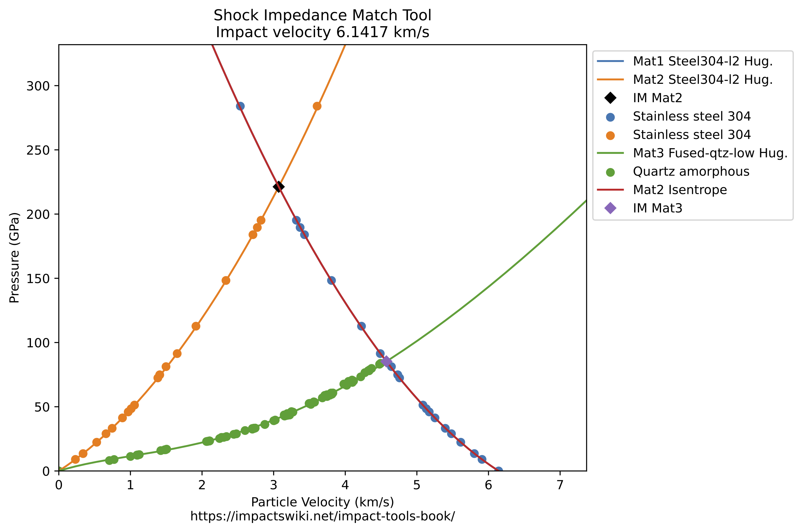
Impact velocity 6.14 (km/s). Mie-Grueneisen model for reshock and release.
Steel304-l2 → Steel304-l2
Steel304-l2 P = 221.27 (GPa), up = 3.07 (km/s), US = 0.0 (km/s), E = 4.72 (MJ/kg), ρ = 11.84 (g/cm3)
Steel304-l2 P = 221.27 (GPa), up = 3.07 (km/s), US = 9.16 (km/s), E = 4.72 (MJ/kg), ρ = 11.84 (g/cm3)
Steel304-l2 → Fused-qtz-low
Steel304-l2 P = 86.68 (GPa), up = 4.61 (km/s), US = 0.0 (km/s), E = 2.13 (MJ/kg), ρ = 9.76 (g/cm3)
Fused-qtz-low P = 86.68 (GPa), up = 4.61 (km/s), US = 8.53 (km/s), E = 10.64 (MJ/kg), ρ = 4.8 (g/cm3)
IM Tool v1.3.0

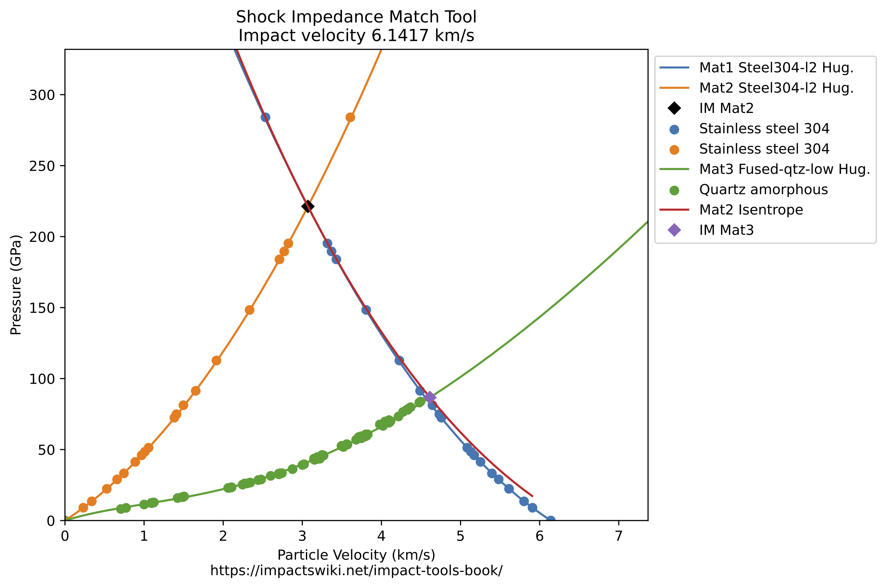

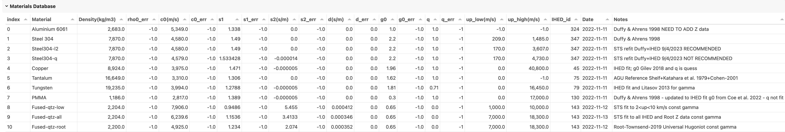
PDV Signals#
3 channels; channel 1 no signal in sample. Does have breakout spall velocity.
PDV fibers are pulled back from sample free surface.
Pyro fiber is touching free surface. No breakout temperature.

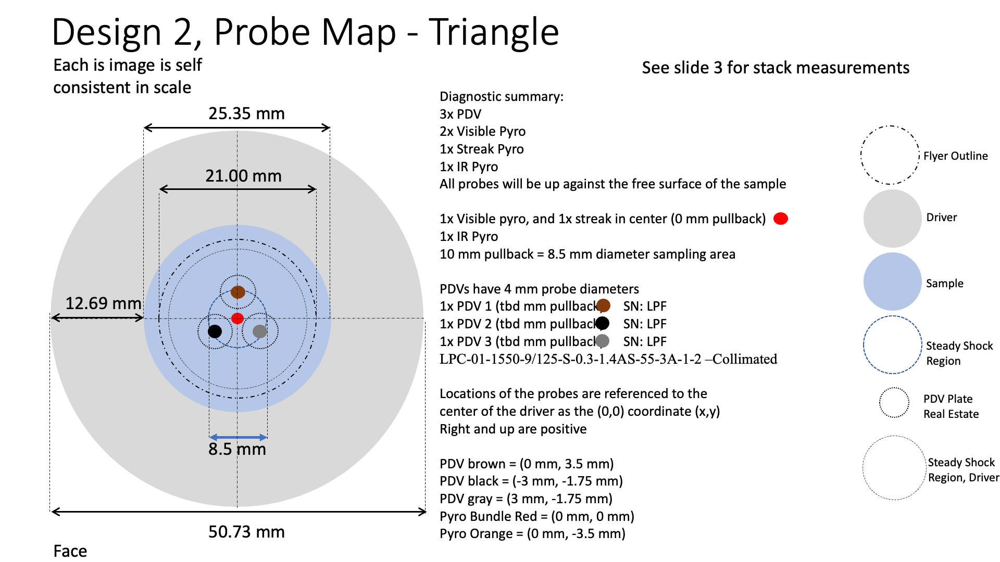
Ch1: shock enters -0.345027 microsec
shock exits? at 0.264973 microsec
fiber destruction? at 1.13497 microsec
Ch2: shock enters -0.325027 microsec
shock exits at 0.274973 microsec
fiber destruction? at 1.33497 microsec
Ch3: shock enters -0.335027 microsec
shock exits at 0.264972 microsec
fiber destruction? at 1.10497 microsec
PDV Shock Velocities and Transit Thickness#
Ch2 and Ch3 have nice reflecting shock front signals through the sample.
Using Sandia SMASH-SIHREN2 v2.0 May 2023 to convert to shock front velocities.
# Load SIHREN2 results - not corrected for offset or index
# offset 3769 m/s
# n = 1.444
pdv2data = np.loadtxt('shot60/Shot60-PDV-ch2-wider.txt',skiprows=30)
pdv2data[:,0]-=pdv2data[0,0]
pdv2data[:,0]*=1.e6
pdv2data[:,0]-=.06
userr1 = ((pdv2data[:,1]+pdv2data[:,2])+3769)/1.444
userr2 = ((pdv2data[:,1]-pdv2data[:,2])+3769)/1.444
uss = (pdv2data[:,1] + 3769)/1.444
pdv2data[:,1]+=3769
pdv2data[:,1]/=1.444
#pdv2data[:,2]*=pdv2data[:,1]/100 # in m/s
#pdv2data[:,2]+=3769
#pdv2data[:,2]/=1.444
#userr1 = ((pdv2data[:,1]+pdv2data[:,2])+3769)/1.444
#userr2 = ((pdv2data[:,1]-pdv2data[:,2])+3769)/1.444
# offset 4495 m/s
# n = 1.444
pdv3data = np.loadtxt('shot60/Shot60-PDV-ch3-wider.txt',skiprows=30,max_rows=66)
pdv3data[:,0]-=pdv3data[0,0]
pdv3data[:,0]*=1.e6
pdv3data[:,0]-=.045
pdv3data[:,1]+=4495
pdv3data[:,1]/=1.444
pdv3data[:,2]*=pdv3data[:,1]/100 # in m/s
print(len(pdv3data))
plt.plot(pdv2data[:,0],pdv2data[:,1],'-+',label='Ch2')
plt.plot(pdv3data[:,0],pdv3data[:,1],'-+',label='Ch3')
#plt.plot(pdv3data[:,0],pdv3data[:,1]+40,'-+',label='Ch3') # error is about 40 m/s
plt.plot([0.,0.],[0,10000])
plt.plot([0.6,0.6],[0,10000])
plt.legend()
plt.ylim(7500,9000)
plt.title('Shot 60 PDV Ch2 and Ch3; Using Ch2 so no wiggle at end')
plt.xlabel('Time (microsec)')
plt.ylabel('Shock Velocity (m/s)')
66
Text(0, 0.5, 'Shock Velocity (m/s)')
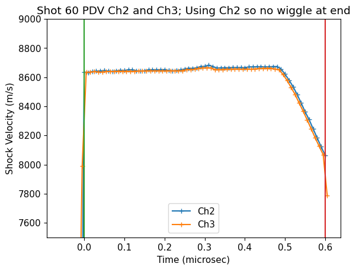
#plt.errorbar(pdv2data[:,0],pdv2data[:,1],yerr=pdv2data[:,2],fmt='r+',label='Ch2')
#plt.errorbar(pdv3data[:,0],pdv3data[:,1],yerr=pdv3data[:,2],fmt='b+',label='Ch3')
print(len(pdv2data),len(pdv3data))
#plt.plot(pdv2data[:,0],uss,'k-')
plt.plot(pdv2data[:,0],userr2,'m--')
plt.plot(pdv2data[:,0],userr1,'c--')
#plt.ylim(4000,10000)
plt.show()
print(userr2-userr1)
67 66
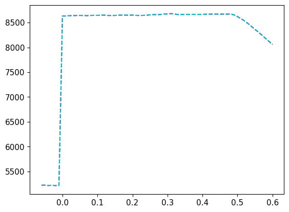
[ -0.42936288 -0.4432133 -0.4432133 -0.3601108 -0.41551247
-0.45706371 -0.48476454 -0.48476454 -0.4432133 -0.4432133
-0.45706371 -0.4432133 -0.49861496 -0.51246537 -0.49861496
-0.52631579 -0.55401662 -0.55401662 -0.55401662 -0.56786704
-0.55401662 -0.58171745 -0.58171745 -0.59556787 -0.6232687
-0.65096953 -0.67867036 -0.66481994 -0.65096953 -0.69252078
-0.73407202 -0.73407202 -0.73407202 -0.74792244 -0.8033241
-0.81717452 -0.84487535 -0.92797784 -0.96952909 -1.05263158
-1.17728532 -1.19113573 -1.28808864 -1.32963989 -1.38504155
-1.52354571 -1.66204986 -1.66204986 -1.80055402 -1.93905817
-1.93905817 -1.93905817 -2.21606648 -2.21606648 -2.49307479
-2.35457064 -2.7700831 -2.90858726 -3.04709141 -3.04709141
-3.46260388 -3.60110803 -3.46260388 -3.73961219 -3.73961219
-3.60110803 -10.8033241 ]
## Initial shock velocity for impedance match solution
## 0.02-0.15 microsec
ind1=np.where((pdv3data[:,0]>0.02) & (pdv3data[:,0]<.15) )
#ind1=np.where((pdv3data[:,0]>0.0) & (pdv3data[:,0]<.15) )
print('PDV3 Us, Us_std (m/s)=')
print(np.mean(pdv3data[ind1,1]))
print(np.std(pdv3data[ind1,1]))
ind=np.where((pdv2data[:,0]>0.02) & (pdv2data[:,0]<.15) )
print('PDV2 Us, Us_std (m/s)=')
print(np.mean(pdv2data[ind,1]))
print(np.std(pdv2data[ind,1]))
print('PDV2+PDV3 Us, Us_std (m/s)=')
print(np.mean([pdv2data[ind,1],pdv3data[ind1,1]]))
print(np.std([pdv2data[ind,1],pdv3data[ind1,1]]))
print('mean err=',np.mean([pdv2data[ind,2],pdv3data[ind1,2]]))
#print('mean err=',np.mean(pdv3data[ind1,2]))
Ussteady = np.mean([pdv2data[ind,1],pdv3data[ind1,1]])
Ussteady_err = np.mean([pdv2data[ind,2],pdv3data[ind1,2]])
print(Ussteady_err, np.mean([pdv2data[ind,2],pdv3data[ind1,2]]))
print(Ussteady_err/Ussteady)
PDV3 Us, Us_std (m/s)=
8639.858832303431
2.1535032865052357
PDV2 Us, Us_std (m/s)=
8645.07031749414
3.2362629652981023
PDV2+PDV3 Us, Us_std (m/s)=
8642.464574898786
3.787529757773608
mean err= 16.63664036863414
16.63664036863414 16.63664036863414
0.0019249879735641238
# Check integrated thickness with target thickness
xpos2 = [0.]
xpos3 = [0.]
ind = np.where(pdv2data[:,0]<0)
pdv2data[ind,1]=0
ind = np.where(pdv3data[:,0]<0)
pdv3data[ind,1]=0
ind = np.where(pdv3data[:,0]>.6)
if len(ind)>0:
pdv3data[ind,1]=0
for i in range(1,len(pdv2data[:,0])):
dt = pdv2data[i,0]-pdv2data[i-1,0]
x2=pdv2data[i,1]*dt+xpos2[i-1]
xpos2.append(x2)
for i in range(1,len(pdv3data[:,0])):
dt = pdv3data[i,0]-pdv3data[i-1,0]
x3=pdv3data[i,1]*dt+xpos3[i-1]
xpos3.append(x3)
xpos2 = np.asarray(xpos2)/1.e3 # convert to mm
xpos3 = np.asarray(xpos3)/1.e3 # convert to mm
print('Shock travel distance (PDV2,PDV3) in mm = ',max(xpos2),max(xpos3))
print('Actual target thickness in center = 5.182+-0.0022 mm')
Shock travel distance (PDV2,PDV3) in mm = 5.161321342791553 5.1571546482501045
Actual target thickness in center = 5.182+-0.0022 mm
Streak Camera Temperatures#
See calibration and moving average notebook:
UCDavis_GasGunStreak_Direct_Cal_v2.ipynb
Using 10 ns moving average for temperature vs. time.
calstreak = np.loadtxt('shot60/shot60-temp-time-2.txt',skiprows=1,delimiter=',')
calstreak[:,0]-=calstreak[0,0]
dtstreak=-0.07
calstreak[:,0]+=dtstreak
plt.plot(calstreak[:,0],calstreak[:,1])
plt.fill_between(calstreak[:,0],calstreak[:,1]-calstreak[:,2],calstreak[:,1]+calstreak[:,2], color='blue', alpha = 0.1)
plt.plot([0.,0.],[0,10000])
plt.plot([0.6,0.6],[0,10000])
plt.title('Shot 60 Streak Temperature R=0')
plt.xlabel('Time (microsec)')
plt.ylabel('Temperature (K)')
plt.ylim(2000,6500)
(2000.0, 6500.0)
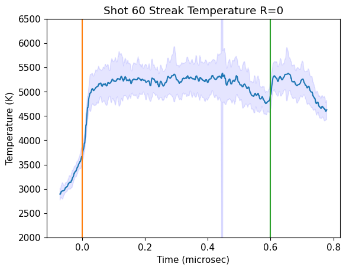
MC Impedance Match Solution#
Using github-impactswiki: shot60/IM-MC-RL-Shot60.ipynb
Using Steel304-l2 → Steel304-l2
This solution is very close to the gamma release solution above but at a little higher shock velocity/pressure
N= 1000
Pressure mean, std (GPa) = 87.59627202805974 0.3358838977265427
Density mean, std (kg/m3) = 4710.3980497641305 17.986888786740998
Particle vel mean, std (km/s) = 4.598997692435084 0.007138691016889283
Shock vel mean, std (km/s) = 8.64246 0.0012633333333333333

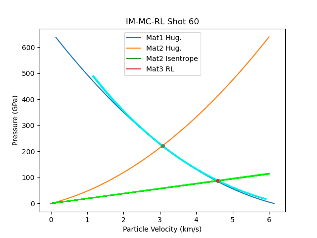

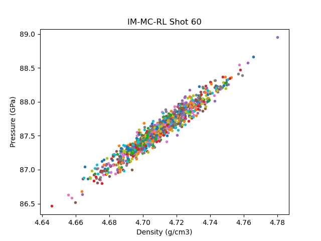
Convert PDV Us(time) to P(time) using new Hugoniot Fits for Fused Silica in the LIQUID region#
# convert Us to P using the liquid region fused silica fit
# latest version in scripts/define_eos.py
#fsresliq = [-0.01452743, 1.69390958, 1.15979627]
#fs_hug_liq.us = fsresliq[2]+fsresliq[1]*fs_hug_liq.up+fsresliq[0]*fs_hug_liq.up*fs_hug_liq.up # km/s
#fs_hug_liq.P = fs_hug_liq.rho_ref*fs_hug_liq.up*fs_hug_liq.us
#fitpres2 = np.interp(pdv2data[:,1]/1.e3,fs_hug_tra.us,fs_hug_tra.P)
#fitup2 = np.interp(pdv2data[:,1]/1.e3,fs_hug_tra.us,fs_hug_tra.up)
# orig
fitpres2 = np.interp(pdv2data[:,1]/1.e3,fs_hug_liq.us,fs_hug_liq.P)
fitup2 = np.interp(pdv2data[:,1]/1.e3,fs_hug_liq.us,fs_hug_liq.up)
# fix the very first point at time zero
#ind0 = np.where(np.abs(pdv2data[:,0])<1.e-10)[0]
#print(ind0)
#pdv2data[ind0,0]=0.0
#fitpres2[ind0]=fitpres2[ind0+1]
#print(pdv2data[ind0+1,0]) #.01 microsec
# zero out earlier time pressures
ind = np.where(pdv2data[:,0]<0)[0]
fitpres2[ind]=0
fitup2[ind]=0
#print(fitup2)
# print last particle velocity before breakout
print(fitup2[-1])
lastup2 = fitup2[-1]
plt.plot(pdv2data[:,0],fitpres2,'-+')
plt.plot([0.,0.],[0,100])
plt.plot([0.6,0.6],[0,100])
plt.title('Shot 60 PDV Ch2')
plt.xlabel('Time (microsec)')
plt.ylabel('Pressure (GPa)')
plt.show()
plt.plot(pdv2data[:,0],fitup2,'-+')
plt.plot([0.,0.],[0,6])
plt.plot([0.6,0.6],[0,6])
plt.title('Shot 60 PDV Ch2')
plt.xlabel('Time (microsec)')
plt.ylabel('Particle velocity (km/s)')
plt.show()
4.211424537057542
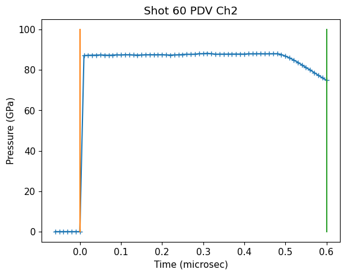
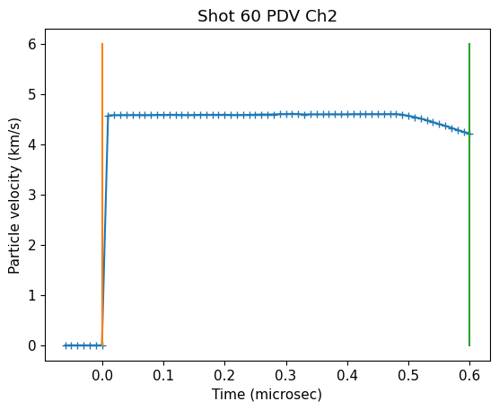
# convert Us to P using the liquid region fused silica fit
# latest version in scripts/define_eos.py
#fsresliq = [-0.01452743, 1.69390958, 1.15979627]
#fs_hug_liq.us = fsresliq[2]+fsresliq[1]*fs_hug_liq.up+fsresliq[0]*fs_hug_liq.up*fs_hug_liq.up # km/s
#fs_hug_liq.P = fs_hug_liq.rho_ref*fs_hug_liq.up*fs_hug_liq.us
#fitpres2 = np.interp(pdv2data[:,1]/1.e3,fs_hug_tra.us,fs_hug_tra.P)
#fitup2 = np.interp(pdv2data[:,1]/1.e3,fs_hug_tra.us,fs_hug_tra.up)
# orig
fitpres3 = np.interp(pdv3data[:,1]/1.e3,fs_hug_liq.us,fs_hug_liq.P)
fitup3 = np.interp(pdv3data[:,1]/1.e3,fs_hug_liq.us,fs_hug_liq.up)
# fix the very first point at time zero
#ind0 = np.where(np.abs(pdv2data[:,0])<1.e-10)[0]
#print(ind0)
#pdv2data[ind0,0]=0.0
#fitpres2[ind0]=fitpres2[ind0+1]
#print(pdv2data[ind0+1,0]) #.01 microsec
# zero out earlier time pressures
ind = np.where(pdv3data[:,0]<0)[0]
fitpres3[ind]=0
fitup3[ind]=0
#print(fitup2)
# print last particle velocity before breakout
print(fitup3[-1])
lastup3 = fitup3[-1]
plt.plot(pdv3data[:,0],fitpres3,'-+')
plt.plot([0.,0.],[0,100])
plt.plot([0.6,0.6],[0,100])
plt.title('Shot 60 PDV Ch3')
plt.xlabel('Time (microsec)')
plt.ylabel('Pressure (GPa)')
plt.show()
plt.plot(pdv3data[:,0],fitup3,'-+')
plt.plot([0.,0.],[0,6])
plt.plot([0.6,0.6],[0,6])
plt.title('Shot 60 PDV Ch3')
plt.xlabel('Time (microsec)')
plt.ylabel('Particle velocity (km/s)')
plt.show()
3.0
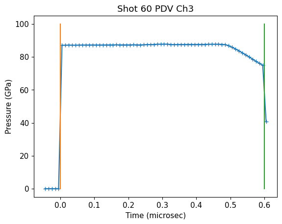
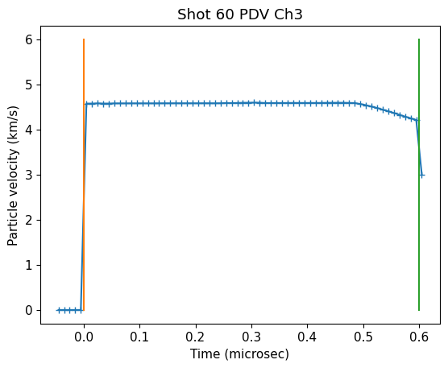
# interpolate P to match streak camera time array
print(len(pdv2data[:,0]))
if 0:
# interpolate to the streak time resolution (> PDV resolution)
s60time = calstreak[:,0]
s60temp = calstreak[:,1]
s60temperr = calstreak[:,2]
s60pres = np.interp(s60time,pdv2data[:,0],fitpres2)
s60us = np.interp(s60time,pdv2data[:,0],pdv2data[:,1])
s60up = np.interp(s60time,pdv2data[:,0],fitup2)
if 0: # original streak
# interpolate to the PDV resolution (< streak time resolution)
s60time = pdv2data[:,0] #calstreak[:,0]
s60temp = np.interp(s60time,calstreak[:,0],calstreak[:,1])#calstreak[:,1]
s60temperr = np.interp(s60time,calstreak[:,0],calstreak[:,2])
s60pres = np.copy(fitpres2)
s60us = np.copy(pdv2data[:,1])
s60us = np.copy(pdv2data[:,1])
s60up = np.copy(fitup2)
if 1: # use PDV3 with smaller uncertainties
# interpolate to the PDV resolution (< streak time resolution)
s60time = pdv3data[:,0] #calstreak[:,0]
s60temp = np.interp(s60time,calstreak[:,0],calstreak[:,1])#calstreak[:,1]
s60temperr = np.interp(s60time,calstreak[:,0],calstreak[:,2])
s60pres = np.copy(fitpres3)
s60us = np.copy(pdv3data[:,1])
s60us_err = np.copy(pdv3data[:,2])
s60up = np.copy(fitup3)
ind = np.where(s60time<0)[0]
s60temp[ind]=0.
s60pres[ind]=0.
#s60temp[max(ind):max(ind)+9]=0.
#s60pres[max(ind):max(ind)+9]=0.
s60temp[max(ind):max(ind)+3]=s60temp[max(ind)+4]
s60pres[max(ind):max(ind)+3]=s60pres[max(ind)+4]
ind = np.where(s60time>.6)[0]
s60temp[ind]=0.
s60pres[ind]=0.
# remove the time period where the temperature is still rising in the streak camera
ind60 = np.where((s60time > 0.02) & (s60time <=0.6))[0]
plt.plot(s60time,s60temp,'+')
plt.plot(s60time[ind60],s60temp[ind60],'+')
plt.fill_between(s60time[ind60],s60temp[ind60]-s60temperr[ind60],s60temp[ind60]+s60temperr[ind60], color='blue', alpha = 0.1)
plt.ylim(4000,6500)
plt.plot([.1,.1],[4000,6500])
plt.plot([.3,.3],[4000,6500])
plt.xlabel('Time (microsec)')
plt.ylabel('Temperature (K)')
plt.title('Shot 60 Fused Silica Decay: Streak Camera and PDV')
plt.show()
plt.plot(s60time[ind60],s60pres[ind60],'+')
plt.ylabel('Pressure (GPa)')
plt.xlabel('Time (microsec)')
plt.title('Shot 60 Fused Silica Decay: Streak Camera and PDV')
plt.show()
# average top of the shock wave
t1=0.1 # microsec
t2=0.3
itop = np.where((s60time > t1) & (s60time < t2))[0]
print(np.mean(s60pres[itop]),np.std(s60pres[itop]))
print(np.mean(s60temp[itop]),np.std(s60temp[itop]))
Tsteady = np.mean(s60temp[itop])
Tsteady_err = np.mean(s60temperr[itop])
Psteady = np.mean(s60pres[itop])
Psteady_err = np.std(s60pres[itop])
print(Tsteady,Tsteady_err,Psteady,Psteady_err,Ussteady,Ussteady_err)
isort = np.argsort(s60pres[ind60])
#print(isort)
plt.plot(s60pres[ind60],s60temp[ind60],'+')
plt.fill_between(s60pres[ind60[isort]],s60temp[ind60[isort]]-s60temperr[ind60[isort]],s60temp[ind60[isort]]+s60temperr[ind60[isort]], color='blue', alpha = 0.1)
plt.ylim(4000,6500)
#plt.xlim(60,90)
#plt.ylim(0,6500)
#plt.xlim(0,90)
plt.xlabel('Pressure (GPa)')
plt.ylabel('Temperature (K)')
plt.title('Shot 60 Fused Silica Decay: Streak Camera and PDV')
plt.show()
67
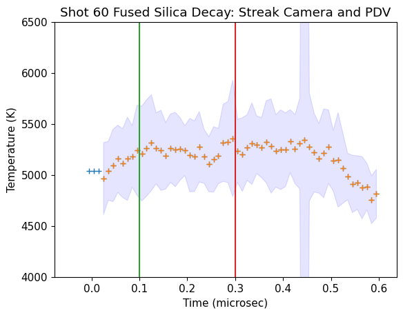
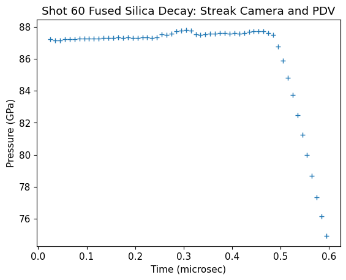
87.37609773291368 0.143866147346624
5239.107596759999 61.87697604796183
5239.107596759999 362.8754952119999 87.37609773291368 0.143866147346624 8642.464574898786 16.63664036863414
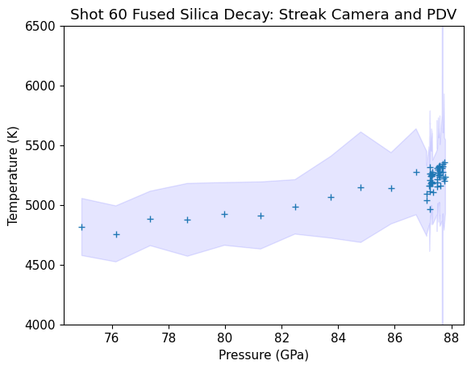
Plot with other fused silica data#
plt.xlabel('Pressure (GPa)')
plt.ylabel('Temperature (K)')
plt.title('Shot 60 Fused Silica Decay: Streak Camera and PDV')
plt.plot(s60pres[ind60],s60temp[ind60],'+',color='orange',label='Shot 60')
plt.fill_between(s60pres[ind60[isort]],s60temp[ind60[isort]]-s60temperr[ind60[isort]],s60temp[ind60[isort]]+s60temperr[ind60[isort]], color='blue', alpha = 0.1)
if 1:
#plt.errorbar(shockdat_list[B88fs['id']].P,shockdat_list[B88fs['id']].T,fmt='bo',mfc='white',yerr=shockdat_list[B88fs['id']].T_std,label=B88fs['lab'])
ind = np.where(shockdat_list[B88RRfs['id']].T>0)
plt.errorbar(shockdat_list[B88RRfs['id']].P[ind],shockdat_list[B88RRfs['id']].T[ind],fmt='bo',mfc='lightblue',yerr=shockdat_list[B88RRfs['id']].T_std[ind],label=B88RRfs['lab'])
plt.errorbar(shockdat_list[S80fs['id']].P,shockdat_list[S80fs['id']].T,fmt='bv',xerr=shockdat_list[S80fs['id']].P_std,yerr=shockdat_list[S80fs['id']].T_std,label=S80fs['lab'])
plt.errorbar(shockdat_list[S81fs['id']].P,shockdat_list[S81fs['id']].T,fmt='bx',label=S81fs['lab'])
plt.xlim(20,120)
plt.ylim(2500,8000)
plt.plot(stsmcsmooth.P,stsmcsmooth.T,'m-',linewidth=3,label='Proposed melt curve')
plt.legend()
plt.savefig('shot60/shot60-comp-data.png')
plt.show()
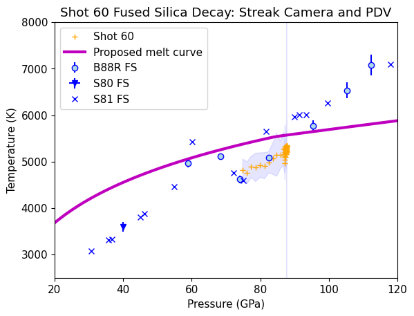
Compare to Omega Fused Silica decaying shock#
#plt.plot(omegafsus,omegafsct*30,'.',label='Omega counts scaled')
plt.plot(shockdat[iMDfs69691.i].us,shockdat[iMDfs69691.i].T*20,'.',label='Omega counts scaled')
# set in define_eos.py
#fs_usmin = 7.4
#fs_usmax = 8.3
#plt.plot([fs_usmin,fs_usmin],[0,20000],'k-')
#plt.plot([7.75,7.75],[0,1000])
#plt.plot([fs_usmax,fs_usmax],[0,20000],'k-')
plt.ylim(0,15000)
plt.xlim(5.7,10)
plt.plot(s60us[ind60]/1.e3,s60temp[ind60],'+',color='orange',label='Shot 60 T(K)')
plt.fill_between(s60us[ind60[isort]]/1.e3,s60temp[ind60[isort]]-s60temperr[ind60[isort]],s60temp[ind60[isort]]+s60temperr[ind60[isort]], color='blue', alpha = 0.1)
#i60 = np.where(s60temp>0)[0]
#plt.plot(s60us[i60]/1.e3,s60temp[i60],label='Shot 60')
#plt.fill_between(s60us[i60]/1.e3,s60temp[i60]-s60temperr[i60],s60temp[i60]+s60temperr[i60], color='blue', alpha = 0.1)
plt.xlabel('Shock Velocity (km/s)')
plt.ylabel('Omega SOP counts [arb] and Shot 60 T (K)')
plt.title('Fused Silica Thermal Emission Inversion')
plt.legend()
plt.savefig('shot60/omega-shot60.png')
plt.show()
#fs_wiggle_P1 = np.interp(fs_usmax,fs_hug_liq.us,fs_hug_liq.P)
print('Transition pressures: ',fs_wiggle_P1, fs_wiggle_P2)
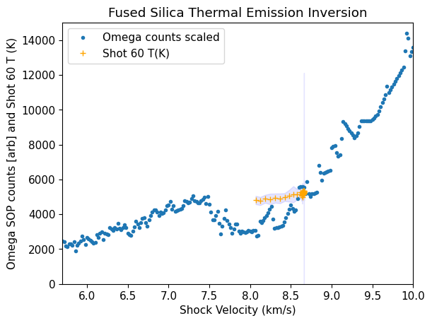
---------------------------------------------------------------------------
NameError Traceback (most recent call last)
Cell In[11], line 28
24 plt.savefig('shot60/omega-shot60.png')
25 plt.show()
26 #fs_wiggle_P1 = np.interp(fs_usmax,fs_hug_liq.us,fs_hug_liq.P)
27
---> 28 print('Transition pressures: ',fs_wiggle_P1, fs_wiggle_P2)
NameError: name 'fs_wiggle_P1' is not defined
PDV release velocity#
No index correction for free surface particle velocity.
# offset 3769 m/s
# n = 1.444
pdv2datab = np.loadtxt('shot60/Shot60-PDV-ch2-breakout-lower.txt',skiprows=30)
pdv2datab[:,0]-=pdv2datab[0,0]
pdv2datab[:,0]*=1.e6
pdv2datab[:,1]+=3769
pdv2datac = np.loadtxt('shot60/Shot60-PDV-ch2-breakout-upper.txt',skiprows=30)
pdv2datac[:,0]-=pdv2datac[0,0]
pdv2datac[:,0]*=1.e6
pdv2datac[:,1]+=3769
# offset 4495 m/s
# n = 1.444
pdv3datab = np.loadtxt('shot60/Shot60-PDV-ch3-breakout-lower.txt',skiprows=30)
pdv3datab[:,0]-=pdv3datab[0,0]
pdv3datab[:,0]*=1.e6
pdv3datab[:,1]+=4495
pdv3datac = np.loadtxt('shot60/Shot60-PDV-ch3-breakout-upper.txt',skiprows=30)
pdv3datac[:,0]-=pdv3datac[0,0]
pdv3datac[:,0]*=1.e6
pdv3datac[:,1]+=4495
plt.plot(pdv2datab[:,0],pdv2datab[:,1],'-+',label='Ch2 lower')
plt.plot(pdv2datac[:,0],pdv2datac[:,1],'-+',label='Ch2 upper')
plt.plot(pdv3datab[:,0],pdv3datab[:,1],'-+',label='Ch3 lower')
plt.plot(pdv3datac[:,0],pdv3datac[:,1],'-+',label='Ch3 upper')
plt.plot([0,1.2],[lastup2*2*1.e3,lastup2*2*1.e3],label='2*up')
plt.xlim(-.1,1.3)
plt.legend(loc='upper left')
plt.title('Shot 60 PDV Ch2 and Ch3 breakout: 2 vels; steep release')
plt.xlabel('Time after breakout (microsec)')
plt.ylabel('Particle Velocity (m/s)')
plt.savefig('shot60/shot60-release-vel.png')
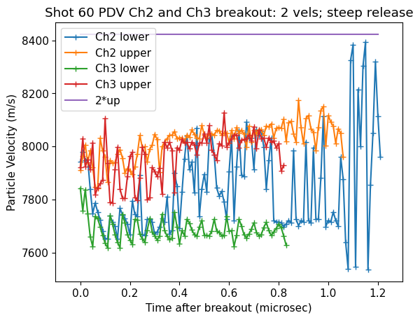
The PDV shows two velocity signals, indicating spalling and a solid surface.
Steeper release than velocity doubling also implies not a fluid at free surface.
Save the calibrated time series of data for plotting elsewhere.#
import pickle
s60Tsteady=Tsteady
s60Tsteady_err=Tsteady_err
s60Psteady=Psteady
s60Psteady_err=Psteady_err
s60Ussteady = Ussteady
s60Ussteady_err = Ussteady_err
# obj0, obj1, obj2 are created here...
isort60=isort
# Saving the objects:
with open('shot60/shot60-analysis.pkl', 'wb') as f: # Python 3: open(..., 'wb')
pickle.dump([s60time, s60temp, s60temperr, s60pres, s60us, s60us_err, s60up, ind60, isort60, s60Tsteady,s60Tsteady_err,s60Psteady,s60Psteady_err,s60Ussteady,s60Ussteady_err], f)
#print(s60time)
# with open('shot60/objs-tra.pkl', 'rb') as f: # Python 3: open(..., 'wb')
# s60time, s60temp, s60temperr, s60pres, s60us, s60us_err, s60up, ind60, isort60,s60Tsteady,s60Tsteady_err,s60Psteady,s60Psteady_err,s60Ussteady,s60Ussteady_err=pickle.load(f)
# Getting back the objects:
#with open('objs.pkl') as f: # Python 3: open(..., 'rb')
# obj0, obj1, obj2 = pickle.load(f)
## end of notebook